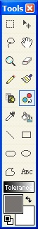
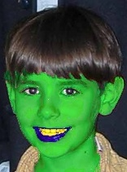

Recolor Tool
 |
The
Recolor Tool (Tools -->Recolor) replaces one color with another. When
recoloring with the primary mouse button, the
foreground color signifies the replacement color and the
background color represents the color to replace. When
recoloring with the secondary mouse button, the background color
signifies the destination color and the foreground color represents the
color undergoing replacement. There are two modifier keys for the Recolor tool: shift and control. These modifier keys increase the usability of the Recolor tool by updating the foreground/background colors from the canvas and by automatically adjusting foreground/background colors proportionally to colors on the canvas. Pressing and holding the control key in conjunction with the primary mouse button causes the Recolor tool to update the foreground color with the color under the cursor. Likewise, pressing and holding the control key in conjunction with the secondary mouse button causes the Recolor tool to update the background color with the color under the cursor. Pressing and holding the shift key in conjunction with the primary mouse button causes the Recolor tool to adjust the foreground color with the difference computed between the background color and the color under the cursor. Likewise, pressing and holding the shift key in conjunction with the secondary mouse button causes the Recolor tool to adjust the background color with the difference computed between the foreground color and the color under the cursor. Recolor Tool Exceptions:
|
||
| Skillful application of the Recolor tool can yield some pretty interesting results. This picture shows one such example. | |||
|
|
Before Recolor | After Recolor | |
|
 |
|||
| Important: The Color Replacer Tool, along with all the other tools that alter the layer must be used within a selected area (if one so exists) created by either the Rectangle or the Lasso Selection Tools . If you are attempting to use this tool outside of an existing selection, no alterations to the active layer will take place. | |||